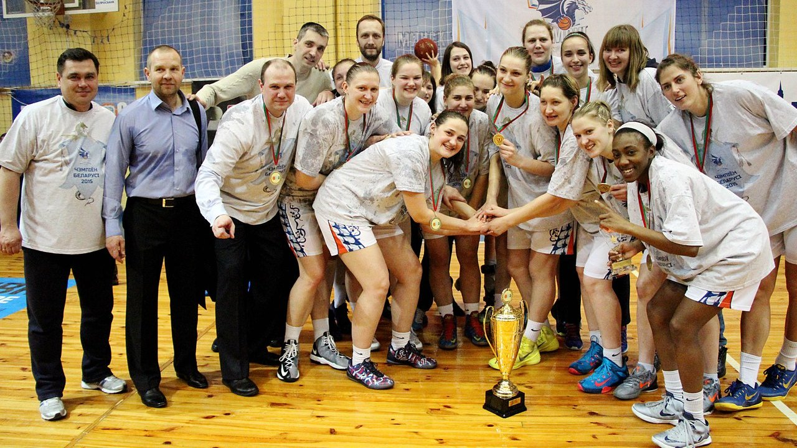

История
История сильнейшего баскетбольного коллектива Беларуси последнего десятилетия берет начало с 2006 года. При создании клуб получил название «Минск-2006» и выбітна отличался от остальных спортивных команд страны не только высокими амбициями, но и беспрецедентным объединением под одной крышей трех подразделений — мужского и женского коллективов, а также детско-юношеской школы.
Последняя представляет из себя бывшую Сдюшор-10, основанную еще в 1972-м году, она также вошла в состав столичной организации.
Мужская команда «Минска-2006» добилась заметных результатов уже в дебютном сезоне — в национальном чемпионате она дошла до полуфинала. Аналогично завершилось и следующее первенство. Переломным в истории нашей команды стал сезон 2008/09. Именно тогда минчане серьезно оптимизировали состав. В том числе и за счет американских легионеров — Данте Стигерса и Карлоса Хурта. Точечные же усилению состава доморощенными исполнителями в результате позволили коллективу завоевать золото чемпионата Беларуси. Первое, но далеко не последнее — с тех пор наш клуб не знает равных на внутренней арене.
После триумфа на национальном уровне минчане начали выводить белорусский баскетбол из международной изоляции. Первую попытку освоить европейскую «целину» дружина начала в 2009 году. Тогда в Еврочеллендже она одержала 2 победы в 6 матчах и заняла 3-е место в группе. С тех пор столичный клуб каждый год участвует в континентальных соревнованиях.
В сентябре 2012-го «Минск-2006» был переименован в «Цмокі-Мінск» для повышения маркетинговой привлекательности, а также привлечения внимания к белорусской культуре. Ведь Дракон — это персонаж белорусской мифологии, который упоминается еще в Статуте ВКЛ 1588 года. Оправданность ребрендинга подтвердил сезон 2012/13 — «Цмокі» стали одним из лидеров лиги ВТБ по посещаемости матчей.
Самым высоким достижением «Драконов» на данный момент является выход в четвертьфинал Еврочелленджа в сезоне 2013/14. С 2010 года наша команда также превратилась в бессменного участника Единой лиги ВТБ. Изначально данный турнир представлял собой соревнования, где участвовали самые сильные коллективы России, Литвы, Украины, Польши, Беларуси и других стран. Однако в 2013-м лига фактически заменила чемпионат России, что в свою очередь повысило престиж и уровень соревнования.
В дебютном году минчане одержали 4 победы при 6 поражениях, давали бой фаворитам и заняли 4-е место из 6. Что касается количества викторий, то рекордным стал сезон 2015/16. В нем белорусский чемпион одержал 9 побед. В этом же сезоне «Цмокі» поучаствовали в новом турнире — Кубке ФИБА-Европа. Белорусы легко прошли во второй этап, где, увы, и закончили выступление. «Цмокам» не хватило буквально двух очков: на домашней площадке в последнем матче второго этапа они не удержали необходимую разницу и пропустили вперед кипрский АЕК.
В межсезонье состав команды значительно восстановился: в ростере появились легионеры Дрю Джойс, Неманья Милошевич, Джордже Гагич и Лаймонас Киселюс. Кроме того, «Цмокі» нашли себе еще одно логово: вместе с «Минск-Арена» команда проводила матчи на Falcon Club Арене.
Сезон 2016/17 «Цмокі» начали гораздо раньше привычного: уже в сентябре, фактически сразу после окончания выступлений мужской сборной Беларуси, «Драконы» вступили в борьбу за место в Лиге чемпионов. Первый квалификационный раунд подчиненные Игоря Грищука прошли без проблем, выбив из нового турнира под эгидой ФИБА болгарский «Рылский». А вот переиграть израильскую «Нагарию» не удалось: и в Минске, и на выезде «Цмокі» уступили по 4 очка и были вынуждены продолжить сезон в Кубке ФИБА-Европа.
В ФИБА-Европа «Цмокі» команда прошла первый групповой этап, взяв 5 матчей, но неожиданно оступилась перед стадией плей-офф, где не хватило буквально одной успешной игры. И все же, на домашней Falcon Club Арене минчане достаточно уверенно переиграли будущего чемпиона — французский «Нантер».
Самым ярким моментом чемпионата Единой лиги ВТБ стала домашняя победа над УНИКСом: защитник Джастин Грей забросил решающий трехочковый на последних секундах овертайма. Болельщикам также запомнились успешные матчи с «Автодором», «Калевом» и «Пармой», а сезон «Цмокі» закрыли разгромом «Нижнего Новгорода» и победным празднованием на Falcon Club Арене.
Несмотря на отдельные успехи, в марте 2017-го вместо Игоря Грищука место главного тренера занял Александр Крутиков. Именно под его руководством «Цмокі» провели один из самых успешных сезонов, попадав в Топ-16 Кубке ФИБА-Европа и до последнего сражаясь до плей-офф ВТБ. А одним из самых блестящих моментов стала первая в истории домашняя победа на «Локомотивом». Звездой того матча был американец Девон Садлер, ставший самым результативным игроком в минской команде. К сожалению, поражение от питерского «Зенита» в последнем матче регулярки не позволило команде впервые в истории попасть в плей-офф.
На внутренней арене «Цмокі» - стабильно сильнее вот уже 10 лет подряд: в сезоне 2017/18 «Цмокі» взяли Кубок и чемпионство страны. На сегодняшний день «Цмокі» - самая титулованная команда суверенной Беларуси.
В сезоне 2017/18 руководством клуба было принято пранципиальное решение: «Цмокі» создали новую команду. Возглавил молодежь бывший игрок Ростислав Вергун. Резервный состав планировался как «трамплин» для перехода в основную команду. Уже в первый сезон этим путем прошел, например, Евгений Белянков. В этом же году команду пригласили к участию в Международном студенческом Кубке в Москве, где команда Ростислава Вергуна стала серебряным призером, уступив на последних минутах сборной России.
Кстати, именно резервный состав участвовал в Кубке Беларуси и национальном чемпионате.
Параллельно с успехами мужской команды развивался и женский коллектив. С 2007 года он неизменно входил в число призеров национального чемпионата, но в то же время считался и самой незадачливой дружиной первенства. Шутка ли, на рубеже десятилетий минчанки трижды выходили в финал чемпионата, однако каждый раз уступали. Впрочем, в сезоне-2013/14 черная полоса, наконец, сменилась белой. Обыграв «Горизонт» из Минской области в четырех встречах, наша женская команда впервые завоевала золото чемпионата, а через год повторила успех. Кроме того, в сезоне-2014/15 «Драконам» покорилась и Балтийская лига. Ну, а первый трофей они завоевали еще в 2010-м году-тогда сокровищница дружины пополнилась Кубком Беларуси.
Летом 2016-го жизнь женской команды серьезно изменилась: руководство клуба сделало ставку на молодых баскетболисток. В составе остались всего два опытных игрока Алла Муравская и Виктория Гаспер, а единственная легионерка — Рейчел Териот — только-только закончила выступление в студенческой NCAA. В команде появились сразу 7 новых баскетболисток, самой старшей из которых — Виолетте Кивляк — было всего 20 лет. Произошли изменения и в тренерском штабе: вместо Алексея Пынтикова в число специалистов вошла экс-тренер Ргвара Елена Ивановская.
Несмотря на практически новый состав с молодыми игроками, тренерский штаб во главе с Андреем Вавлевым уже в сентябре смог вывести команду в финал Кубка Беларуси. А в ноябре 2016-го «Цмокі» впервые с 2010-го взяли Кубок, переиграв в решающей встрече «Горизонт». Молодая команда, которую вели опытные лидеры, отлично смотрелась в Балтийской и Восточно-европейской лигах, но главный подарок клубу сделала в апреле. Тогда девушки буквально не оставили шансов тому же «Горизонту», всухую переиграв его в финальной серии чемпионата Беларуси 3-0. Таким образом, за один сезон «Цмокі» собрали все трофеи в баскетбольной Беларуси. Этот успех женская команда повторила в сезоне 2017/18.
Что касается второй команды «Цмокі», то основной ее задачей является подготовка молодых и талантливых баскетболистов к будущим баталиям. Неудивительно, что дружина является базой для молодежной (U-20) сборной страны. В частности, на чемпионате Европы 2015 года в дивизионе «В» 11 из 12 игроков из состава белорусов выступали именно за «Цмокі». Руководил же коллективом тренерский штаб младших»драконов". При этом работа на перспективу не препятствует достижению сиюминутного результата. В чемпионате-2011/12 вторая команда «Цмокі» завоевала бронзовые медали. Спустя два года минчане повторили успех, ну а еще сезоном позже вышли в полуфинал. Кроме того, ребята отпраздновали триумф в Европейской юношеской баскетбольной лиге, превзойдя по всем статьям своих, в том числе и куда более именитых конкурентов.